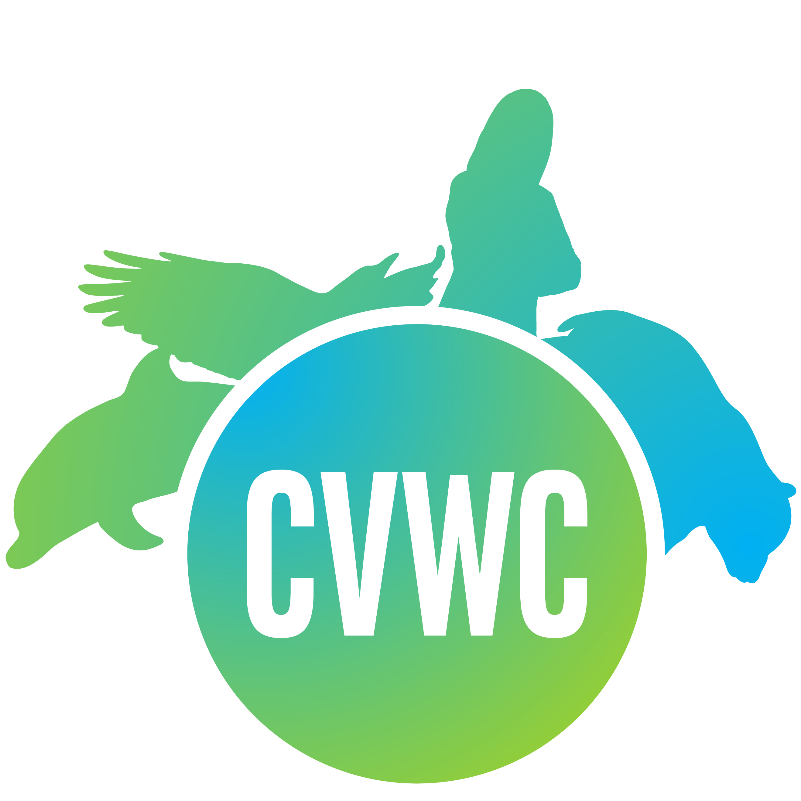

ICCV 2019 Workshop & Challenge on
Computer Vision for Wildlife Conservation (CVWC)
Oct-27, 2019 @ Room-E3, COEX Convention Center, Seoul, Korea|  |  |
简介
保护野生动物对于维持健康和平衡的生态系统，以及确保可持续的生物多样性都非常重要。众所周知，濒危物种是生物多样性和环境健康的重要指标。世界各国政府以及类似WWF(世界野生动物基金会)的环保组织都投入了大量资源和项目来保护濒危物种。
幸运的是，计算机视觉技术逐渐显示出其巨大潜力。现在能够从监控相机甚至无人机收集大量野生动物相关图像数据，并使用这些数据构建从边缘到云端的野生动物保护系统。从边缘部署的角度来看，计算机视觉技术可以应用于智能监控相机，以获取野生动物相关的图像/视频并监控野生动物。而云端系统有更多的计算资源，可以用于更复杂的任务，例如从分布各地的智能监控相机获取的大量照片中重新识别某些野生动物个体， 聚合跨传感器信息, 可视化动物的运动轨迹及其运动规律等。
本次研讨会旨在加强计算机视觉社区的社会责任，汇集社区研究人员以及野生动物保护研究人员，从三个方面推进计算机视觉在野生动物保护中的应用:
- 欢迎提交基于视觉技术的野生动物保护的相关论文。
- 组织一次东北虎保护相关的挑战赛，包含老虎检测，姿势估计和再识别等任务。
- 邀请计算机视觉社区和野生动物保护社区相关研究人员做特邀报告，组织专题讨论，培育“计算机视觉技术保护野生动物”的新方法和新方向。
论文征集
征集论文的主题包括但并不限于：
- Fine-grained wildlife recognition
- Wildlife re-identification
- Wildlife tracking
- Smart trap sensor design
- Drone based monitoring/tracking
- Simulation and visualization
- Full conservation system
- Dataset related to wildlife conservation
- Challenge solutions
- 原创论文提交
- 过去1~2年已发表/已接收的有特色论文
- 挑战赛的解决方案论文
挑战赛
基于Amur Tiger Re-identification in Wild (ATRW)数据集，我们举办了包含以下四个任务的挑战赛：
- 任务1： 老虎目标检测
- 任务2： 老虎关键点检测
- 任务3： 老虎身份再识别：根据手工标注的检测框/关键点进行训练测试
- 任务4： 全自动的老虎身份再识别: 利用自动检测器的结果进行老虎身份再识别


| Datasets | ATRW | [1,2] | C-Zoo[3] | C-Tai[3] | TELP[4] | α-whale[5] |
|---|---|---|---|---|---|---|
| Target | 老虎 | 老虎 | 黑猩猩 | 黑猩猩 | 大象 | 鲸鱼 |
| Wild | √ | √ | × | × | × | √ |
| Pose | √ | × | × | × | × | × |
| #BBoxes | 9,496 | 278 | 2,109 | 5,078 | 2,078 | 924 |
| #BBoxes with ID | 3,649 | 278 | 2,109 | 5,078 | 2,078 | 924 |
| #ID | 92 | 278 | 24 | 78 | 276 | 38 |
| #BBx/ID | 39.7 | 1 | 19.9 | 9.7 | 20.5 | 24.3 |
新闻
- 5月8日: 网站上线.
- 5月30日: 挑战赛数据集论文公开(todo).
组织者
Jianguo Li, Intel LabsWeiyao Lin, Shanghai JiaoTong University
Hanlin Tang, Intel AI Lab
Greg Mori, Simon Fraser University
Joachim Denzler, Friedrich Schiller University Jena
特邀演讲嘉宾
Pietro Perona, CaltechJingdong Wang, Microsoft Research Asia
Tech Director (TBD), WWF
顾问委员会
Yoshua Bengio, Professor, MILAPietro Perona, Professor, Caltech
Lucas Joppa, Chief Environmental Officer, Microsoft
程序委员会
Dan Morris (Microsoft)Mac Oisin Aodha (Caltech)
Sara Beery (Caltech)
Elizabeth Bondi (University of Southern California)
Anna Bethke (Intel AI Lab)
Kristina Kermanshahche (Perspicace Inc)
Fei Fang (CMU)
Graham Taylor (University of Guelph)
Jiwen Lu (Tsinghua University)
Junliang Xing (CASIA, Chinese Academy of Science)
Shanshan Zhang (Nanjing University of Science and Technology)
Tilo Burghardt (University of Bristol)
Alexander Freytag (Carl Zeiss AG)
Ergys Ristani (Facebook)
Michael Ying Yang (University of Twente, Netherland)
Ning Xu (Adobe Research)
Xintong Han (Malong Tech)
Shuyuan Li (SJTU)
重要日期
| Training/validation dataset + development kit released | June 28, 2019 |
| Testing dataset released | July 26, 2019 |
| Contributed Paper submission | July 31, 2019 |
| Result submission | August 2, 2019 |
| Challenge result notification | August 9, 2019 |
| Challenge Paper submission | August 15, 2019 |
| Acceptance notification | August 23, 2019 |
| Camera-ready | August 30, 2019 |
| Workshop | October 27, 2019 |